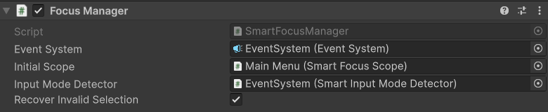
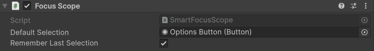

Focus management¶
SmartFocusManager coordinates the active menu scope. SmartFocusScope defines which descendant Selectable controls belong to that menu and optionally remembers the last valid selection.
Focus target precedence¶
When a scope needs focus, its target is resolved in this order:
A valid target must belong to the active scope and be active, enabled, and interactable. An invalid remembered or default selection is skipped.
SmartFocusManager¶
Configure these Inspector fields:
- Event System: the managed EventSystem. If empty, the manager resolves
EventSystem.current. - Initial Scope: the scope focused when the manager starts.
- Input Mode Detector: optional mode source used to pause automatic recovery during mouse-driven interaction.
- Recover Invalid Selection: restores a valid focus target when the current selection becomes invalid.

The main runtime operations are:
SetScope(scope)changes the active scope and resolves focus immediately.RequestFocus(selectable)selects a specific valid control in the current scope.RecoverFocus()resolves the normal remembered/default/fallback sequence on demand.PushModal(scope)andPopModal()manage modal focus restoration.
SetScope(null) stops scope monitoring without changing the current EventSystem selection. Every SetScope call also clears pending modal restoration history; use PushModal and PopModal for modal flows.
SmartFocusScope¶
Set Default Selection to the control that should receive focus when the scope has no valid memory. Remember Last Selection is enabled by default. Disable it when every entry should start from the default or first valid descendant.

Call ClearRememberedSelection() to discard stored selection explicitly:
The remembered object is used only while it remains a valid descendant of the scope.
Invalid-selection recovery¶
While a scope is active, the manager observes the EventSystem selection. With recovery enabled, it can replace a selection that is:
- missing;
- outside the current scope;
- on an inactive GameObject;
- on a disabled
Selectable; or - non-interactable.
When an active SmartInputModeDetector is assigned, automatic recovery pauses in Mouse mode. Keyboard or gamepad UI activity can restore valid focus when needed. Without an active detector, recovery remains enabled regardless of pointer activity.